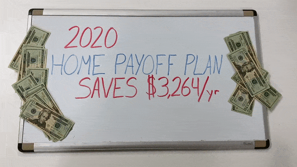
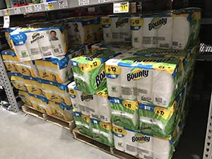
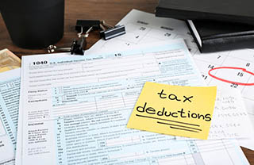
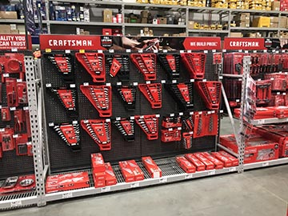

16 Things You Should Do To Save Money In 2020
In today's world, it has never been more important to prepare for your financial future.
One of the easiest ways to add to your growing nest-egg is to simply eliminate unecessary expenses and save more of your hard earned money.
We often forget some of the golden rules to saving that were taught to us over the years. It has never been more important to save and prepare for the unknown.
Here's a quick list of things you can do to save on bills this year. No matter what your circumstances are, there's something here that you can use like cutting down your mortgage bill, saving on utilities, getting more for your money at the grocery store, and even getting samples of popular products.
1. For Pete's Sake, Quit Smoking
This might make some people upset to hear, but it's time to quit smoking. Not only is it hazardous to your health, but it's costing you and your family a fortune. Smoking one pack per day costs over $3,000 per year!
There are plenty of techniques to quit smoking, but it all comes down to your dedication to cut the habit. Come up with a plan and have family and friends keep you accountable!
2. Install CFLs or LED Lights Where You Can
New lighting technology has really come a long ways. Now although they do cost more than traditional incandescent bulbs, CFL and LED bulbs can last for years without having to replace them. You don’t even need to replace every bulb in the house at once. Even swapping just your four or five most-used light bulbs can save you $45 or more a year!
CFL vs. LED
CFLs, which use a quarter of the energy of incandescent bulbs and last for years, are the next cheapest option after traditional bulbs. But they also have some drawbacks: They take a while to warm up to full brightness, and they also contain a small amount of mercury.
Meanwhile, LEDs are more expensive. However, they’re getting cheaper all the time, and they are easily the best lighting option available: They light up instantly, are efficient as CFLs, produce a warm glow without getting hot to the touch, and can last for decades.
3. Ditch Your Home Insurance & Get $536/year Back a Year With This Lucrative Online Tool
Here's A Clever Way That American Homeowners Are Getting $536 Back a Year
Still unknown to many is a brilliant online tool being dubbed as "The Amazon of Home Insurance" that could benefit millions of Americans and reduce their payments by as much as $536 per year! You could bet the home insurance companies aren't too thrilled about losing all that profit and might secretly hope homeowners don't find out before the rules change.
So while the insurance companies pray that you don't learn about this, experts are making a nationwide push and urging homeowners to take advantage of this free online tool. This tool is currently online as of October, but it could be taken down at any time. But the good news is that once you're in, you're in. If lowering your payments and putting cash back in your pocket would help you, it's vital you act now and see if you could qualify for massive savings in today's marketplace.
How Do I Qualify?
Step 1: Click how long you've lived in your home to instantly check your eligibility for free.
Step 2: View your new lower rate and save money! Click here to get your new rate.
Home many years have you lived in your home?
4. Get Up To $3,264 In Your Pocket Every Single Year With New Fed Rate Relief Program (Still Available)
Banks Don't Want Homeowners Knowing This
Still unknown to many is a brilliant Congress Mortgage Relief Program that could benefit qualified homeowners and reduce their payments by as much as $3,264 per year! You could bet the banks aren't too thrilled about losing all that profit and might secretly hope homeowners don't find out.

So while the banks happily wait for this program to end, there is a nationwide push to have homeowners take advantage quickly. The good news is that once you're in, you're in. If lowering your payments, paying off your mortgage faster, and even taking some cash out would help you, it's vital you act now and see if you could take advantage and benefit from congress's generous relief program.
How Do I Start?
Step 1: Click your state on the map.
Step 2: Calculate your NEW estimated monthly payment! Click here to start.
Select Your State:
5. Make A Grocery List
You ever go to the grocery store when you're hungry and find yourself checking out with way more than you intended? We call this "Hunger Shopping" and it's quite dangerous to your wallet!
Before going to get groceries, make a list of groceries that you need for the upcoming week. That way, you only buy what you're intending to use and the amount that will get thrown away from being expired is kept to a minimal.
6. Buy in Bulk
One of the easiest things you can do to instantly start saving money is to buy in bulk! Retailers often give a MUCH better deal on products such as paper towel, toilet paper, detergent, etc if you buy in bulk.
This might seem like an obvious one, but we often forget how much money we waste by not buying in bulk.

7. Eat Out With These Top Restaurant Deals
Eating out often can be expensive. But going out to eat for a date night every now and then is totally fine and can be done on the cheap if you choose your restaurants wisely!
Consider these special deals when picking where to go:
Chili's Three for Me $10 Meals
Choose an appetizer, entree AND desert for just $10
Outback Steakhouse's Waslkabout Wednesdays for $9.99
Choose steak or chicken with fries AND a drink for just $9.99
Applebee's 2 for $20
Choose between two salads (or one appetizer) as well as two main meals with sides for just $20
Olive Garden's Unlimited Soup, Salad, and Breadsticks
Choose between ANY entree at Olive Garden and get unlimited soup or salad and breadsticks. Or you could just do the $6.99 option of unlimited Soup/Salad and Breadsticks.
8. New Auto Insurance Policy
Here’s what auto insurance companies don’t want you to know...and what thousands of consumers are quickly learning about their current auto insurance plan:
If you're paying more than $63 per month for auto insurance, this auto insurance comparison tool can help you check to see if you're overpaying in a few minutes. This is something every driver should be doing every 6 months or so to ensure that they are getting the best deal.
Insurance companies are always competing to win your business, but if you turn a blind eye and keep the same policy in place for a long period of time, your rates might have increased. By checking rates, drivers saved an average of $531 per year with a new policy.
So do yourself a favor and do a quick comparison by filling out a short form (about 4 minutes). This is a fast way you can start saving on your auto bills.
Compare Auto Insurance Rates >>9. Take Full Advantage Of These Tax Deductions
Owning a home can be very lucrative. Seriously, owning a home can not only give you a cheaper monthly payment than renting but in many cases, the tax benefits make the decision a no-brainer.
Here are a few of the larger deductions that you need to be sure to take:

Interest you pay on your mortgage: If you own a home and don’t have a mortgage greater than $750,000, you can deduct the interest you pay on the loan. This is one of the biggest benefits to owning a home versus renting–as you could get massive deductions at tax time. The limit used to be $1 million, but the Tax Cuts and Jobs Act of 2017 (TCJA) reduced the limit and made some clarifications on deducting interest from a home equity line of credit.
Property taxes: Another awesome benefit to owning a home is the ability to deduct your property taxes. Before TCJA, the rules were a little more flexible and you were able to deduct the entirety of your property taxes. Now things have a changed a bit. Under the new law, you can deduct up to $10,000. The deduction for state and local income taxes was combined with the deduction for state and local property taxes, too.
Tax incentives for energy-efficient upgrades: While most of the tax incentives for making energy-efficient upgrades to your home have gone away, there are still a couple worth noting. You can still claim tax deductions on solar energy–both for electric and water heating equipment, through 2021. The longer you wait, though, the less money you’ll get back. Here’s the percentage of equipment you can deduct, based on time of installation:
Between January 1, 2017, and December 31, 2019 – 30% of the expenditures are eligible for the credit
Between January 1, 2020, and December 31, 2020 – 26%
Between January 1, 2021, and December 31, 2021 – 22%
10. Use Government Rebates To Get Solar Panels And Slash Your Energy Bills
Warning: Do not pay your next energy bill until you read this...
This is the 1 simple truth your power company doesn't want you to know. There is a new policy in 2020 that qualifies homeowners who live in specific zip codes to be eligible for $1,000's of Government funding to install solar panels. Has your power company told you that? Of course not. They hope homeowners don't learn about this brilliant way to reduce your energy bill tremendously!
When homeowners check whether they qualify many are shocked that subsidies and rebates can cover a lot of the costs associated with installation so it greatly reduces the amount you'll have to pay. Many may qualify for $0 down! Soon, you could be on your way to significantly reducing your electric bill in a matter of weeks.
Smart homeowners are setting out to do their own research and determine whether this new program lives up to its reputations. Over and over again, many are reporting back on their findings, with the most exciting part being that they are now able to save $1,000s a year on their own energy bill.
Estimate Your New Power Bill >>11. Want a Patio? Consider Concrete Over Pavers
Building a patio can add great value to your home, as well as creating enjoyable outdoor living space for you and your family. But patios can come at a great cost.
When we decided to add a patio to our home, we looked at the different surface options carefully. Although many landscapers would recommend pavers over concrete because of their durability over time, we decided that the cost savings was more important to us. We personally love the clean look of concrete as well.
Now one thing to remember with concrete is that it WILL crack eventually. But if you have a good concrete crew, it should be prepped right where the cracks are minimal. So we expect to see cracks, but are hopeful that it will be minimal.
12. Grill!
Here's an easy money-saving tip: Grill in the summertime! When you use your stove or oven to cook, it creates a lot of heat. And in the summertime, it can make your air conditioner work extra hard. If you're not much of a griller, consider cooking meals in a crockpot.
13. No Life Insurance? You'll Want To Use This Brilliant Life Insurance Trick
If you don't have life insurance, you better read this.
It's not something any of us like to think about or plan for. But when the worst happens, it's essential to know your family and loved ones are covered financially. That's why it's essential to have a life insurance. A good life insurance policy can help cover the cost of a mortgage, childcare costs and safeguard your family from inheriting any debts you might have.
But the sad truth is, a shocking number of Americans do not have a life insurance policy and their family is at financial risk if the worst should happen.
There is a service that is now allowing users to get free life insurance quotes from some of the top insurance companies out there. People are shocked at how cheap an excellent policy is after requesting their free quotes. But the reality is, life insurance rates are at a 20-year low and thanks to new program policies you could qualify for a great new policy at an extremely affordable price.
To get your free quote today, click below and complete a few questions (about 60 seconds). Once you're done, you will be presented with choices and rates you never thought possible (no login required). Enjoy your savings!
Get Your Free Quote Now >>14. Get A Home Warranty and Never Pay For Covered Home Repairs Again!
Still unknown to many is a brilliant Home Warranty Program called the Choice Home Warranty that could benefit millions of households and help them never pay for covered appliance failures, furnace breakdowns, electrical issues and so much more! You likely have homeowners insurance, right? A Home Warranty Plan is similar to a homeowners insurance plan, but it actually covers many things that an insurance plan won't like a broken refrigerator, a broken furnace or an electrical malfunction on a ceiling fan.
Often times, new homeowners are offered a 1 or 2-year home warranty plan when they purchase a home. This is generally a huge plus for the home buyer because it takes away the stress of having to pay for likely issues that might come up during the first year or two of owning the home. Issues such as a broken refrigerator or dishwasher aren't fun to deal with. Or how about a broken furnace or air conditioner? These would likely cost $1,000s of dollars to fix!
Luckily, homeowners now have the option to get a home warranty plan anytime after they bought their home. Even if you've lived there for 20 years, you can still get your own home warranty plan that will cover the cost of many unforeseen home repairs!
Get Your Free Quote Now >>15. Quit Buying Expensive Coffee
Yes, we all love a tasty Starbucks latte every now and then. But buying coffee from your favorite barista everyday adds up quick!
Let's do the math... $5 per latte 5 days a week is $25 a week. That's $100 per month just for coffee!
If you brew your own coffee at home, the cost is around 30 cents a cup. Now if you're all about convenience, consider a Keurig Coffeemaker. The cost per cup will go up to around 60 cents but it's still MUCH cheaper than buying from a coffee shop and is super convenient.
16. Veterans Get a Massive Discount at Lowes
All active military and veterans are entitled to get a 10% discount on all in-store purchases at Lowe's.
To make it even better, Lowe's extends this offer to their spouses! Need new tools? How about new appliances? Lowe's carries a variety of things, so take advantage of this incredible discount!

DON'T FORGET: The Fed Rate Mortgage Relief Program Ends This Month! Get Up to $3,264 In Your Pocket
How Do I Start?
Step 1: Click your state on the map.
Step 2: Calculate your NEW estimated monthly payment! Click here to start.
Select Your State:
And that's a wrap! If you found these savings tips useful, please share our page with friends and family!
Sponsored Content